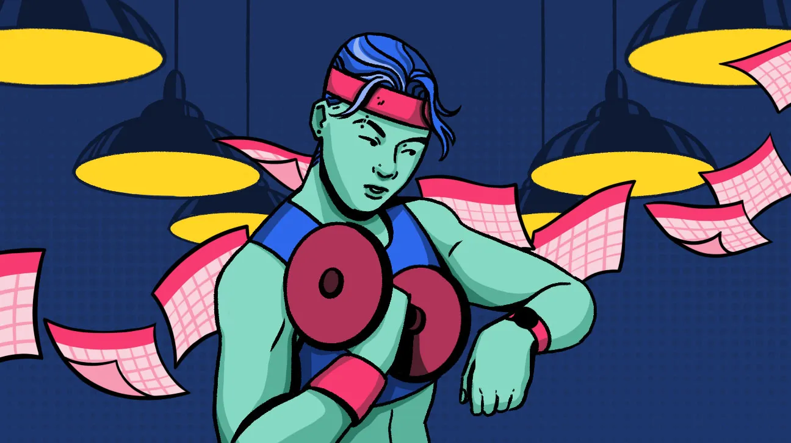

A Beginner’s Guide to Building a Strength Training Plan
Everything you need to know about building a strength training routine that’ll help you meet your goals — plus sample workouts to get you started.
So you wanna get stronger. But how do you build a workout program that’s not going to ruin your life, waste your time, or injure your entire body?
Also, how many reps and sets should you be doing? WTF are all those strappy contraptions at the gym? And why is that person grunting like that? (Should *you* be making noises like you’re trying to pull the sword from the stone?)
Anyone who has started weightlifting gets it — it’s hard to know where to start.
That’s why we got in touch with Ideen Chelengar, NSCA-certified strength and conditioning specialist, creator of Vices Fitness, and trusted TikTok fitfluencer. He has your back (and your triceps, biceps, quads, hams, etc.).
He filled us in on his foolproof “algorithm” for creating a strength training routine at various experience levels.
Here’s how it works.
What’s your goal?
First things first: You gotta set a goal. Whether you’re trying to accomplish something out in the world or in the gym, you need to dream it to achieve it.
“I would definitely say the first thing I ask someone before writing their strength program is just, what is their goal?” Chelengar says.
Common goals include:
- improving general health
- building muscle mass
- losing weight
- getting stronger in general
- getting leaner or more toned
- getting better at some task (i.e., powerlifting)
Based on that goal, Chelengar creates individualized programs for clients.
If you just want to get healthier, you won’t necessarily need to be doing super heavy lifting. But if you want to gain a bunch of muscle, you’ll want to consistently add volume (volume = weight x reps x sets) to your workouts.
If you want to lose weight, you’ll need to keep your calorie burn rate high. That might mean adding cardio to your routine or doing circuits to keep your heart rate up.
If you want to get leaner or more toned, you’ll want to increase the intensity of your workouts over time (either by increasing the speed of your reps, increasing the complexity of the movement, or adding volume) while also keeping your calorie burn rate high.
If you’re looking to powerlift, you’ll need to boost your raw strength and focus on lifting a lot of weight in repetitive movements like squats or deadlifts.
How experienced are you?
Next, it’s time to realistically assess your experience level with strength training.
Chelengar says that even if you’re a seasoned marathon runner or pro yogi, you’re still a beginner when it comes to strength training if you’ve never gotten intimate with a dumbbell set or comparable equipment.
So, you might be super fit, but building muscle is a whole ’nother thing.
Here’s how he broke it down for us:
- Beginner. No matter how fit you are, if you’ve never gotten down with a bench press or other strength exercises, “your skill level with strength training is beginner, because you’ve never done strength training,” he says.
- Intermediate. Obvi, a step up from beginner. “If you’ve done strength training a few months in a row and are pretty comfortable around the gym, that’s somewhere in the middle,” he says.
- Advanced. Another step up. You’re advanced if you’ve “done multiple years [of strength training] in a row with 3+ strength training days a week” and are super comfortable around all the equipment, Chelengar says.
- Super advanced. Like, athlete or pro level. “You’re at the level of a fitness instructor, you’re powerlifting for fun, or you used to play sports or something like that. That’s beyond just being comfortable in the gym — you know how to combine biometrics and strength training and how to condition at the upper-upper level,” he says.
If you’re a beginner, Chelengar explains, you’re not necessarily going to need to do as many days or go as hard as someone who’s more advanced.
When you’ve been in the strength training game for a while, you’re more likely to plateau and will need to shake things up more often and push to a higher intensity to reap results.